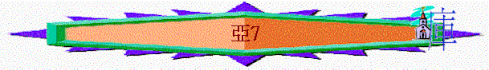

|
耶和華心�媟巨鉹齞� |
|||
|
為選民犯罪而大發烈怒 |
為重建錫安而極其火熱 |
為復興錫安而極其火熱 |
為彌賽亞國而親自成就 |
|
1:2-6 |
1:7-6:15 |
7-8 |
9-14 |
∼此段應是「大利烏王第四年九月」的信息，這是距異象有年餘的時間，當時聖殿工程應已再開始，神不單是要求他們建殿，神也重視他們生活的行為，內裡的清潔。
∼而此段也沒有特別的異象，反而有明顯的信息，重點是復興他們的靈性與生命。
∼每段信息用類似「耶和華的話臨到撒迦利亞」為開始。
1.第一信息----斥責他們的禁食（7:1-7）
A.應否禁食的疑問（7:1-3）
「大利烏王第四年九月，就是基斯流月初四日，耶和華的話臨到撒迦利亞。那時伯特利人已經打發沙利亞和利堅米勒，並跟從他們的人，去懇求耶和華的恩，並問萬軍之耶和華殿中的祭司和先知說：「我歷年以來，在五月間哭泣齋戒，現在還當這樣行嗎？」」7:1-3
∼被擄至巴比倫的猶太人每年在五至七月會為亡國的慘痛而禁食，現在他們已重建聖殿，人不再需要哀痛，所以他們需否再禁食？
B.虛假禁食的斥責（7:4-7）
「萬軍之耶和華的話就臨到我說：「你要宣告國內的眾民和祭司，說：『你們這七十年，在五月、七月禁食悲哀，豈是絲毫向我禁食嗎？你們吃喝，不是為自己吃，為自己喝嗎？當耶路撒冷和四圍的城邑有居民，正興盛，南地高原有人居住的時候，耶和華藉從前的先知所宣告的話，你們不當聽嗎？』」7:4-7
∼神斥責他們的禁食只是為自己亡國而悲哀，他們不是為神，為神的禁食應是有敬虔，為罪有痛悔及有改變行為的表現，他們只是為自己如同為自己吃喝般（也是為自己的）
∼但從歷史至今，他們在最興旺的時間，他們沒有敬畏神的心，不聽先知的責備，沒有真正悔改及回轉，所以表面上有為自己的宗教行為（禁食），卻沒有實質的行動轉變。
2.第二信息----怒憤他們的惡行（7:8-14）
A.
以色列的惡行（7:8-11）
「耶和華的話又臨到撒迦利亞說：「萬軍之耶和華曾對你們的列祖如此說：『要按至理判斷，各人以慈愛憐憫弟兄。不可欺壓寡婦、孤兒、寄居的，和貧窮人。誰都不可心裡謀害弟兄。』」他們卻不肯聽從，扭轉肩頭，塞耳不聽，」7:8-11
「世人哪，耶和華已指示你何為善。他向你所要的是什麼呢？只要你行公義，好憐憫，存謙卑的心，與你的神同行。」彌6:8
∼他們的惡行是什麼？
a.
沒公義----不按至理判斷（Execute
true judgment）
b.
沒憐憫----欺壓寡婦、孤兒、寄居的，和貧窮人
c.
心剛硬----不聽勸導，塞耳不聽，心如金鋼石（鑽石）般剛硬
∼彌6:8也提及神所指示的善是行公義，好憐憫，存謙卑的心，他們卻沒有，行惡得罪神！
B.耶和華的忿怒（7:12）
「使心硬如金鋼石，不聽律法和萬軍之耶和華用靈藉從前的先知所說的話。故此，萬軍之耶和華大發烈怒。」7:12
C.神吹散的終局（7:13-14）
「萬軍之耶和華說：「我曾呼喚他們，他們不聽；將來他們呼求我，我也不聽！我必以旋風吹散他們到素不認識的萬國中。這樣，他們的地就荒涼，甚至無人來往經過，因為他們使美好之地荒涼了。」」7:13-14
「先前耶和華怎樣喜悅善待你們，使你們眾多，也要照樣喜悅毀滅你們，使你們滅亡；並且你們從所要進去得的地上必被拔除。耶和華必使你們分散在萬民中，從地這邊到地那邊，你必在那裡事奉你和你列祖素不認識、木頭石頭的神。」申28:63-64
∼此段是過去式，說明過往選民犯罪，令神發怒，至終神不聽他們呼求，以旋風吹散他們到素不認識的萬國中（指他們被擄，分散在外邦地），也應驗了申28:63-64所說的話。